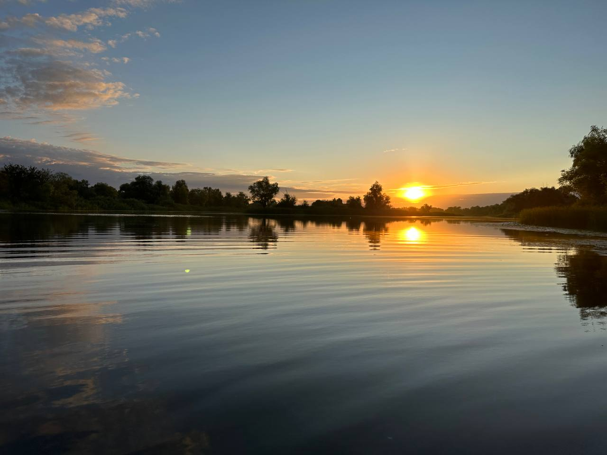

Мое увлечение рыбалкой
Рыбалка — это не просто хобби, это способ отдохнуть от городской суеты, насладиться природой и провести время с друзьями или в одиночестве. Для меня рыбалка — это медитация, которая позволяет забыть о повседневных заботах и насладиться моментом.
